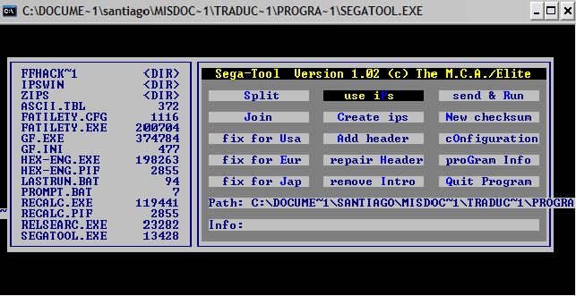

Por DaRKWiZaRDX
Aquí aprenderás cómo crear parches IPS para distribuir tus hacks/traducciones sin tener que perder ancho de banda al subir una ROM entera (que además es ilegal =\ ).
Para crear un parche necesitarás:
- La ROM original.
- La ROM modificada.
- (SNES/SEGA)TOOL o algún otro programa para crear parches.
Aquí daré solo las instrucciones para SEGA/SNESTOOL ya que son los programas más rápidos que he visto para crear IPS.
1. Abre el programa. te aparecerá algo similar a esto:
2. Elige "Create IPS"
3. Cuando te diga "Select unchanged file" elige con el cursor en el menú a la
izquierda la ROM _ORIGINAL_
4. Cuanto te pida "Select changed file" elige con el cursor del menú a la
izquierda la ROM _MODIFICADA_
5. ¡Listo! En el mismo directorio te creará un fichero con el nombre de la ROM
modificada con extensión *.ips
También es bastante simple esto, ¡Y ya puedes distribuir tus traducciones!